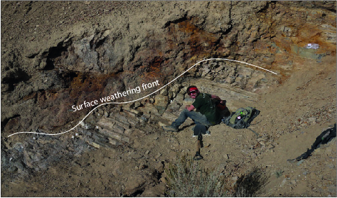

The Earth history team is and interdisciplinary research group that spans fields of geochemistry, geobiology, field geology, and computational modeling. We are particularly interested in the co-evolution of climate and life across Earth history, from >3 billions years ago until today.
For geochemists and Earth historians alike diagenesis is often regarded as a problem to be avoided. Diagenetic process adds complexity to the geochemical signals and in the worst case can obliterate the primary environmental information. Instead of attempting to avoid diagenesis, our research seeks to extract the primary chemical information from ancient carbonate sediments by better understanding the diagenetic processes. Diagenetic reactions involve fluids in the subsurface and the amount of fluid flow determines the extent to which diagenesis alters or preserves the original geochemical signals (fluid- and sediment-buffered diagenesis). We have developed a numerical model that simulates these reactions between carbonate and pore-fluids along a flow path Ahm et al., 2018. The model has been ground-truthed against measurements of calcium and magnesium isotopes from modern to Neogene carbonate sediments in the Bahamas. By quantifying the style and extent of early marine diagenesis (fluid- versus sediment-buffered), this model can explain much of the stratigraphic and lateral variability observed in the chemistry of Neogene shallow-water carbonate sediments and extract the chemical composition of contemporaneous seawater. When applied to ancient carbonate sediments, the model can be used to `see through' diagenesis and more accurately reconstruct records of past seawater chemistry. Future research, involve integrate additional geochemical proxies into the model framework and seek to generate complimentary datasets.


635 million years ago, the surface of our planet went through dramatic changes during the aftermath of the last great Snowball Earth. This period is marked by conspicuous dolostone units that cap glacial deposits worldwide - the basal Ediacaran cap dolostones. By measuring calcium and magnesium isotope ratios in cap dolostone units from across the world, we have identified spatial patterns of fluid flow that record the circulation of glacial seawater beneath the seafloor during Snowball Earth deglaciation. This research has revealed that the geochemical variability recorded in cap dolostones largely is the product of local diagenetic processes expressed globally in continental margins. The descent into the last great Snowball Earth glaciation is recorded by an extreme negative carbon isotope excursion - The Trezona anomaly. This pre-glacial excursion is found globally in carbonate rocks and reaches enigmatic carbon isotope values of -10 per mill. Through measurements of calcium and magnesium isotopes, I am currently exploring the relative timing and potential drivers for this excursion.


Throughout the history of our planet, Earth's surface has gone through critical transitions. Perhaps most dramatic is the evolution of oxygenic photosynthesis and the rise of atmospheric oxygen more than 2.3 billion years ago (the Great Oxidation Event). This event is expected to have caused major changes in the global carbon cycle, which may be recorded by the composition of stable carbon isotopes in carbonate rocks. However, ancient carbonate sediments deposited before the Great Oxidation Event have baseline carbon isotope values of approximately 0‰ - broadly similar to baseline values recorded in Phanerozoic! This observation challenges our understanding of how sediments record and preserve signals of the global carbon cycle. It is likely that the carbon cycle on early Earth was significantly different from the modern and included fluxes that may not exist on Earth today. Moreover, only a fraction of ancient carbonate sediments is preserved in the geologic record due to the continuous recycling of ocean crust through the forces of plate tectonics. The chemistry of sediment may also be altered during the transformation of primary sediment into rocks (diagenesis). As a result, it is possible that the chemistry of the ancient carbonate sediments is not telling us a true story of the ancient carbon cycle. Ongoing research in the Earth history group includes using calcium and magnesium isotope measurements from the Steep Rock area in Northern Ontario to better understand the carbon cycle on early Earth. This project is funded by the Simons Foundation Collaboration on the Origins of Life Simons Foundation Collaboration on the Origins of Life
 The concentration of reactive Fe in sedimentary rocks is extremely sensitive to modern weathering processes. Understanding the record of redox sensitive elements in ancient sediments is fundamental for extracting records of the concentration of atmospheric oxygen through Earth history. By using trace element analysis of samples from a shallow self-drilled core and coincident outcrop from Vinini Creek (Central Nevada), I found that in core samples there is abundant iron bound to pyrite and siderite minerals. In contrast, in outcrop samples much of that iron had been remobilized and transformed into iron oxides. This work emphasizes the limitations for using measurements of the concentration of pyrite and iron oxide in rocks collected from outcrop to infer past changes in oxygen levels (the iron speciation proxy) and highlights the need for more robust methods to evaluate the degree of alteration and diagenesis in ancient sediments.